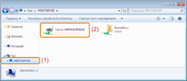

Instalacja przy użyciu programu [Eksplorator Windows]
1
Włącz komputer i zaloguj się w systemie Windows.
2
Wyświetl okno programu [Eksplorator Windows].
W menu [Start] wybierz [Wszystkie programy] lub [Programy] → [Akcesoria] → [Eksplorator Windows].
3
Wykonaj następującą procedurę.
|
(1)
|
Wybierz serwer wydruku z [Sieć] lub [Moje miejsca sieciowe].
|
|
(2)
|
Kliknij dwukrotnie ikonę udostępnionej drukarki lub przeciągnij ikonę do folderu drukarki.
|

4
Aby zainstalować sterownik drukarki, postępuj zgodnie z instrukcjami na ekranie.